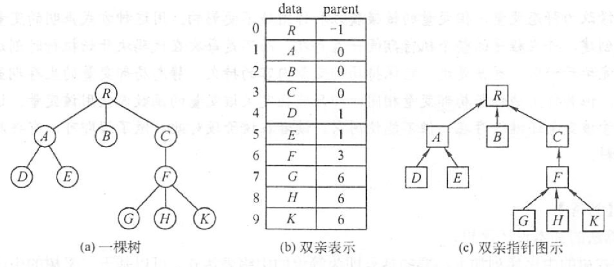
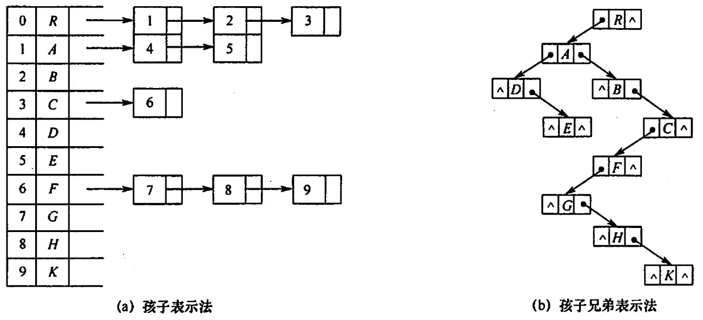

2022.09.14

#define MAX_TREE_SIZE 100
typedef struct{
ElementType data;
int parent;
}PTNode;
typedef struct{
PTNode nodes[MAX_TREE_SIZE];
int n;
}PTree;
孩子表示法
孩子兄弟表示法：左孩子右兄弟

【答案】：D
【答案】：D
【答案】：D
【答案】：A
【答案】：B
【答案】：A? -> C
【答案】：B
【答案】：C
A / \ B C \ / \ D E F
【答案】：C -> D
在森林的二叉树表示中，结点M和结点N是同一父结点的左儿子和右儿子，则在该森林中（）。 A. M和N有同一双亲 B. M和N可能无公共祖先 C. M是N的儿子 D. M是N的左兄弟
【答案】：B
【2009 统考真题】将森林转换为对应的二叉树，若在二叉树中，结点u是结点v的父结点的父结点，则在原来的森林中，u和v可能具有的关系是(）
I父子关系 II兄弟关系 III u的父结点v的父结点是兄弟关系
A. 只有II B. I和II C. I和I D. I、II和III
【答案】：B
【2011 统考真题】已知一棵有2011 个结点的树，其叶结点个数为 116，该树对应的二叉树中无右孩子的结点个数是（）。 A. 115 B. 116 C. 1895 D. 1896
【答案】：2011-116 = 1895，D
【2014 統考真题】将森林F转换为对应的二叉树T，F中叶结点的个数等于（）. A.T中叶结点的个数 B.T中度为1的结点个数 C.T中左孩子指针为空的结点个数 D.T中右孩子指针为空的结点个数
【答案】：C
【2016 统考真题】若森林F有15条边、25个结点，则F包含树的个数是（）. A. 8 B. 9 C. 10 D. 11
【答案】：10，C
【2019 统考真题】若将一颗树T转化为对应的二叉树BT，则下列对 BT 的遍历中，其遍历序列与T的后根遍历序列相同的是（ ）。 A.先序遍历 B.中序遍历 C.后序遍历 D.按层遍历
【答案】：B
【2020 统考卖题】已知森林F及与之对应的二叉树T，若F的先根遍历序列是[a],b,c,d,e,f，中根遍历序列是b[,a],d,f,e,c，则T的后根遍历序列是（ ）。 A. b, a, d, f, e, c B. b,d,f,e,c,a C. b,f,e,d,c,a D. f,e, d,c,b,a
【答案】：A -> C，F后根中根都对应T中序！
T后根就是T后序：b f e d c e
stateDiagram-v2
a --> b
a --> c
c --> d
c --> NULL
d --> null
d --> e
e --> f
e --> x
【2021 統考真题】某森林 F对应的二叉树为T，若T的先序遍历序列是[a],[b,d],[c,e,g,f]，中序遍历序列是[b,d],[a],[e,g,c,f]，則F中树的棵树是（ ）。 A. 1 B. 2 C. 3 D. 4
【答案】：C
stateDiagram-v2
a --> b
b --> x
b --> d
a --> c
c --> e,g
c --> f